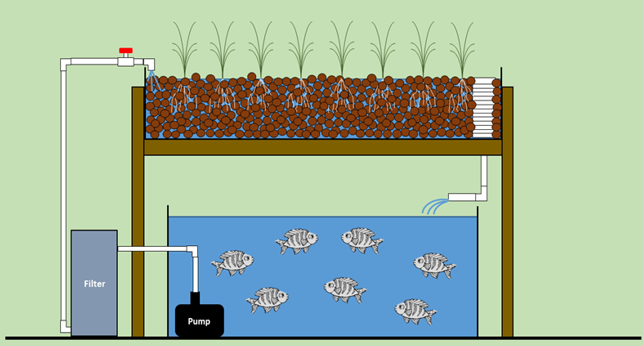
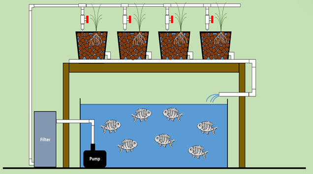

Sistem air dalam atau "rakit" ini jadi favorit buat tanaman yang tumbuh cepat dan dipanen utuh. Desainnya simpel: palung dengan kedalaman enam hingga delapan inci, lebar empat hingga delapan kaki, dan bisa sepanjang seratus kaki!
Lebar palung biasanya nggak lebih dari delapan kaki, biar gampang cek tanaman setiap hari. Air kaya nutrisi dan beroksigen mengalir dari satu ujung ke ujung lainnya. Kalau saluran lebih dari dua puluh lima kaki, kasih jarak di saluran masuk biar nutrisi merata. Dan jangan lupa, tambahin aerasi biar kadar oksigen terjaga untuk panen yang sukses!
1. Sistem Sumur Dalam
2. Sistem Pasang Surut

3. Sistem Nutrient Film Technology (NFT)
4. Sistem Bucket
